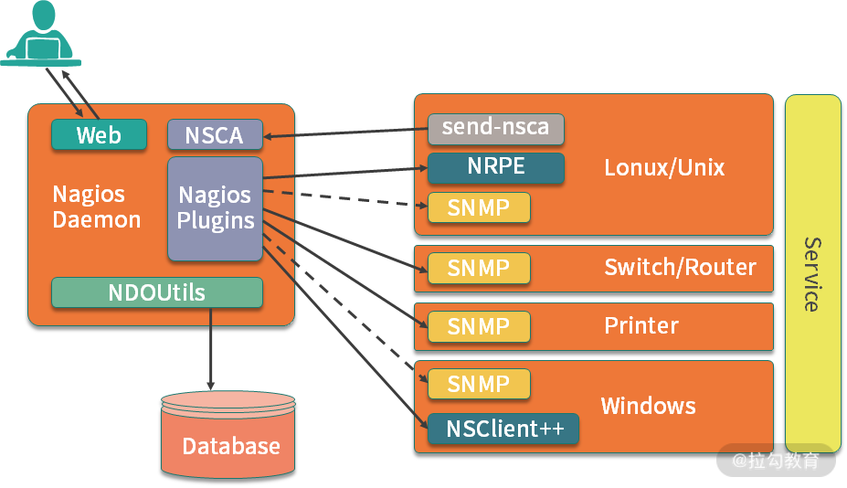

- 00 开篇词：搭建分布式知识体系，挑战高薪 Offer.md
- 01 如何证明分布式系统的 CAP 理论？.md
- 02 不同数据一致性模型有哪些应用？.md
- 03 如何透彻理解 Paxos 算法？.md
- 04 ZooKeeper 如何保证数据一致性？.md
- 05 共识问题：区块链如何确认记账权？.md
- 06 如何准备一线互联网公司面试？.md
- 07 分布式事务有哪些解决方案？.md
- 08 对比两阶段提交，三阶段协议有哪些改进？.md
- 09 MySQL 数据库如何实现 XA 规范？.md
- 10 如何在业务中体现 TCC 事务模型？.md
- 11 分布式锁有哪些应用场景和实现？.md
- 12 如何使用 Redis 快速实现分布式锁？.md
- 13 分布式事务考点梳理 + 高频面试题.md
- 14 如何理解 RPC 远程服务调用？.md
- 15 为什么微服务需要 API 网关？.md
- 16 如何实现服务注册与发现？.md
- 17 如何实现分布式调用跟踪？.md
- 18 分布式下如何实现配置管理？.md
- 19 容器化升级对服务有哪些影响？.md
- 20 ServiceMesh：服务网格有哪些应用？.md
- 21 Dubbo vs Spring Cloud：两大技术栈如何选型？.md
- 22 分布式服务考点梳理 + 高频面试题.md
- 23 读写分离如何在业务中落地？.md
- 24 为什么需要分库分表，如何实现？.md
- 25 存储拆分后，如何解决唯一主键问题？.md
- 26 分库分表以后，如何实现扩容？.md
- 27 NoSQL 数据库有哪些典型应用？.md
- 28 ElasticSearch 是如何建立索引的？.md
- 29 分布式存储考点梳理 + 高频面试题.md
- 30 消息队列有哪些应用场景？.md
- 31 集群消费和广播消费有什么区别？.md
- 32 业务上需要顺序消费，怎么保证时序性？.md
- 33 消息幂等：如何保证消息不被重复消费？.md
- 34 高可用：如何实现消息队列的 HA？.md
- 35 消息队列选型：Kafka 如何实现高性能？.md
- 36 消息队列选型：RocketMQ 适用哪些场景？.md
- 37 消息队列考点梳理 + 高频面试题.md
- 38 不止业务缓存，分布式系统中还有哪些缓存？.md
- 39 如何避免缓存穿透、缓存击穿、缓存雪崩？.md
- 40 经典问题：先更新数据库，还是先更新缓存？.md
- 41 失效策略：缓存过期都有哪些策略？.md
- 42 负载均衡：一致性哈希解决了哪些问题？.md
- 43 缓存高可用：缓存如何保证高可用？.md
- 44 分布式缓存考点梳理 + 高频面试题.md
- 45 从双十一看高可用的保障方式.md
- 46 高并发场景下如何实现系统限流？.md
- 47 降级和熔断：如何增强服务稳定性？.md
- 48 如何选择适合业务的负载均衡策略？.md
- 49 线上服务有哪些稳定性指标？.md
- 50 分布式下有哪些好用的监控组件？.md
- 51 分布式下如何实现统一日志系统？.md
- 52 分布式路漫漫，厚积薄发才是王道.md
50 分布式下有哪些好用的监控组件？
在上一课时的内容中，分析了分布式系统下的线上服务监控的常用指标，那么在实际开发中，如何收集各个监控指标呢？线上出现告警之后，又如何快速处理呢？这一课时我们就来看下这两个问题。
常用监控组件
目前分布式系统常用的监控组件主要有 OpenFalcon、Nagios、Zabbix、CAT 等，下面一起来看看这几款组件的应用及相关特性。好钢要用在刀刃上，由于各类监控组件的应用和配置更偏向基础运维，所以本课时的目的是希望你对几种组件有个基本了解，不建议投入太多时间学习组件的配置细节。
OpenFalcon
Open-Falcon 是小米开源的一款企业级应用监控组件，在很多一线互联网公司都有应用，已经成为国内最流行的监控系统之一。
我们在上一课时中介绍的监控指标，Open-Falcon 都有支持，我个人觉得，Open-Falcon 是监控指标最完善的监控组件之一。Falcon有一个特点，它是第一个国内开发的大型开源监控系统，所以更适合国内互联网公司的应用场景，在使用上，Open-Falcon 也要比其他的监控组件更加灵活，关于Open-Falcon 的监控指标，你可以在官网上了解更多的信息：Open-Falcon 官网。
Zabbix
Zabbix 基于 Server-Client 架构，和 Nagios 一样，可以实现各种网络设备、服务器等状态的监控。Zabbix 的应用比较灵活，数据存储可以根据业务情况，使用不同的实现，比如 MySQL、Oracle 或 SQLite 等，Zabbix 的 Server 使用 C 语言实现，可视化界面基于 PHP 实现。
Zabbix 整体可以分为 Zabbix Server 和 Zabbix Client，即 Zabbix Agent，Zabbix对分布式支持友好，可以对各类监控指标进行集中展示和管理，并且有很好的扩展性，采用了微内核结构，可以根据需要，自己开发完善各类监控。
如果希望了解更多具体的应用，还可以去 Zabbix 官网了解相关的内容：ZABBIX 产品手册。
Nagios
Nagios（Nagios Ain’t Goona Insist on Saintood）是一款开源监控组件，和 Zabbix 等相比，Nagios 支持更丰富的监控设备，包括各类网络设备和服务器，并且对不同的操作系统都可以进行良好的兼容，支持 Windows 、Linux、VMware 和 Unix 的主机，另外对各类交换机、路由器等都有很好的支持。

Nagios 对各类网络协议下的监控支持非常好，我们在第 42 课时提过硬件负载均衡的 F5 设备，就可以应用 Nagios 进行监控。
Nagios 虽然监控报警能力强大，但是配置比较复杂，各种功能都要依靠插件来实现，图形展示效果很差。从这个角度来看，Nagios 的应用更加偏向运维，大部分业务开发同学在工作中简单了解就可以。
Nagios 还可以监控网络服务，包括 SMTP、POP3、HTTP、NNTP、PING 等，支持主机运行状态、自定义服务检查，可以进行系统状态和故障历史的查看，另外，使用 Nagios 可以自定义各种插件实现定制化的功能。感兴趣的同学可点击这里查看官网了解一下。
CAT
CAT（Central Application Tracking）早期是大众点评内部的监控组件，2014 年开源，并且在携程、陆金所、猎聘网等大型互联网公司内部广泛应用。
CAT 基于 Java 开发，特别适合 Java 技术栈的公司，对分布式系统支持非常好。在社区开源以后，CAT 又加入了很多特性功能，已经成为一个大而全的应用层统一监控组件，对各类分布式服务中间件、数据库代理层、缓存和消息队列都有很好的支持，可以为业务开发提供各个系统的性能指标、健康状况，并且还可以进行实时告警。
相比其他偏向运维的监控组件，比如 Nagios、Cat 更加关注应用层面的监控指标，支持性能埋点和优化，对开发工程师更加友好。我在工作中和 CAT 打交道比较多，比较推荐这款监控组件，大家有机会可以在自己的公司里推广使用。
点击这里查看 CAT 项目的开源地址，由于篇幅所限，这里只做简单介绍，另外附上点评技术团队发表的技术文章：
监控处理制度
大型互联网公司都非常重视服务稳定性工作，因为服务稳定性直接影响用户体验，影响公司产品在用户心中的口碑，线上服务稳定性是开发者需要重点关注的，那么如何处理线上告警，出现报警如何第一时间处理呢？
一般来说，线上故障处理有下面几个原则：
- 发现故障，第一时间同步到相关业务负责人，上下游链路；
- 第一时间快速恢复业务，快速进行故障止血；
- 及时协调资源，避免故障升级；
- 事后进行故障复盘和总结，避免再次出现类似问题。
线上告警和故障，相信大部分开发同学都会遇到，故障处理经验的提高是研发工程师进阶和成长当中必须经历的。如何处理各类故障，是否有一个体系化的稳定性知识，也是衡量架构师的重要标准，从故障中我们可以吸取到很多教训，提升服务的稳定性，更好的支持业务。
总结
这一课时的内容分享了常见的分布式监控组件应用，以及线上故障处理制度的相关内容，介绍了 Open-Falcon、Zabbix、Nagios 及 Cat 的应用，一起讨论了线上告警的 SOP 如何制定。
在稳定性建设中，监控指标和监控组件都是我们的工具，是术的层面；故障告警如何处理，如何做好事前监控和事后复盘，是道的层面，术业专攻，再结合合理的制度，才可以把稳定性工作做好。
在你负责的项目中，应用了哪些监控组件呢？又是如何进行配置的呢？欢迎留言分享你的经验。
© 2019 - 2023 Liangliang Lee. Powered by gin and hexo-theme-book.